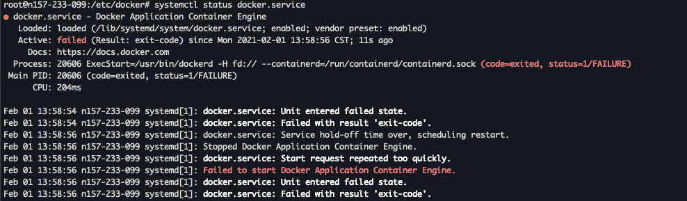

Airren Ren
Monday, January 1, 1
「Docker」 Docker 常用命令
centos 安装docker
把yum包更新到最新
1yum update
安装需要的软件包
1yum install -y yum-utils device-mapper-persistent-data lvm2
设置yum源
1yum-config-manager --add-repo https://download.docker.com/linux/centos/docker-ce.repo
查看所有仓库中所有docker版本，并选择特定版本安装
1yum list docker-ce --showduplicates | sort -r
2
3[root@MiWiFi-R3-srv ~]# yum list docker-ce --showduplicates | sort -r
4 * updates: mirrors.aliyun.com
5Loading mirror speeds from cached hostfile
6Loaded plugins: fastestmirror
7Installed Packages
8 * extras: mirrors.aliyun.com
9docker-ce.x86_64 3:18.09.0-3.el7 docker-ce-stable
10docker-ce.x86_64 18.06.1.ce-3.el7 docker-ce-stable
11docker-ce.x86_64 18.06.1.ce-3.el7 @docker-ce-stable
12docker-ce.x86_64 18.06.0.ce-3.el7 docker-ce-stable
13docker-ce.x86_64 18.03.1.ce-1.el7.centos docker-ce-stable
14docker-ce.x86_64 18.03.0.ce-1.el7.centos docker-ce-stable
15......
安装Docker，命令：yum install docker-ce-版本号，我选的是18.06.1.ce-3.el7，如下
1yum install docker-ce-18.06.1.ce-3.el7
启动Docker，命令：systemctl start docker，然后加入开机启动，如下
1systemctl start docker
2systemctl enable docker
验证是否安装成功 docker version
1[root@MiWiFi-R3-srv ~]# docker version
2Client:
3 Version: 18.06.1-ce
4 API version: 1.38
5 Go version: go1.10.3
6 Git commit: e68fc7a
7 Built: Tue Aug 21 17:23:03 2018
8 OS/Arch: linux/amd64
9 Experimental: false
10
11Server:
12 Engine:
13 Version: 18.06.1-ce
14 API version: 1.38 (minimum version 1.12)
15 Go version: go1.10.3
16 Git commit: e68fc7a
17 Built: Tue Aug 21 17:25:29 2018
18 OS/Arch: linux/amd64
19 Experimental: false
使用Docker 中国加速器
由于网络原因，我们在pull Image 的时候，从Docker Hub上下载会很慢。
修改文件
1vi /etc/docker/daemon.json
2#添加后：
3{
4 "registry-mirrors": ["https://registry.docker-cn.com"],
5 "registry-mirrors": ["https://ustc-edu-cn.mirror.aliyuncs.com"],
6
7 "live-restore": true
8}
重起docker服务
1systemctl daemon-reload && systemctl restart docker
进入容器Shell
1docker exec -it <continer> /bin/bash # or sh
2docker exec -it --user root <container id> /bin/bash # root 用户进入 -u root
修改容器中的文件
方法1：进入容器，使用vim修改
方法2：docker cp
1 # 将文件从容器中copy 到本地
2 docker cp fbaf54e9940a:/opt/cerebro/conf ./
3 # 使用本地编辑器修改后，copy回容器中
4 docker cp application.conf fbaf54e9940a:/opt/cerebro/conf
方法3：运行容器时使用本地的文件
1# 冒号前是本地路径（需要绝对路径），冒号后是容器中的路径
2docker run -itd -p 8080:80 -v /etc/nginx/nginx.conf:/etc/nginx/nginx.conf --name=webtest nginx:latest
安装docker Debain

1# 查看docker状态，并尝试启动.
2$ systemctl status docker
3$ /usr/bin/dockerd -H fd:// --containerd=/run/containerd/containerd.sock
4$ echo '' > /etc/modprobe.d/nf-blacklist.conf
5$ systemctl status docker.service
6
7# 如果出现
8# failed to load listeners: no sockets found via socket activation: make sure the service was started by systemd
9$ systemctl daemon-reload
10$ service docker restart
11$ service docker status
12
13# 或者将 /etc/docker/daemon.json 置为空{}
docker image 导出
1# 导出image
2docker save -o new_file.tar mysql:8.0.2
3
4# 通过tar包载入image, --input -i 指定导入的文件
5docker load --input new_file.tar
docker神器
runlike
批量删除已经exit 的容器
https://www.cnblogs.com/brady-wang/p/10500597.html
容器自动重启
1docker update --restart=always [container ID]
fix Exited(139)
https://github.com/docker/for-linux/issues/58
In case someone stumbles on this closed issue, here’s quick howto:
Description: centos:6 docker image fails to start, no output given.
Workaround: append vsyscall=emulate to line GRUB_CMDLINE_LINUX_DEFAULT in your /etc/default/grub. E.g.
1GRUB_CMDLINE_LINUX_DEFAULT="consoleblank=0 systemd.show_status=true elevator=noop console=tty1 console=ttyS0 vsyscall=emulate"
then update grub
update-grub
and reboot host machine
reboot